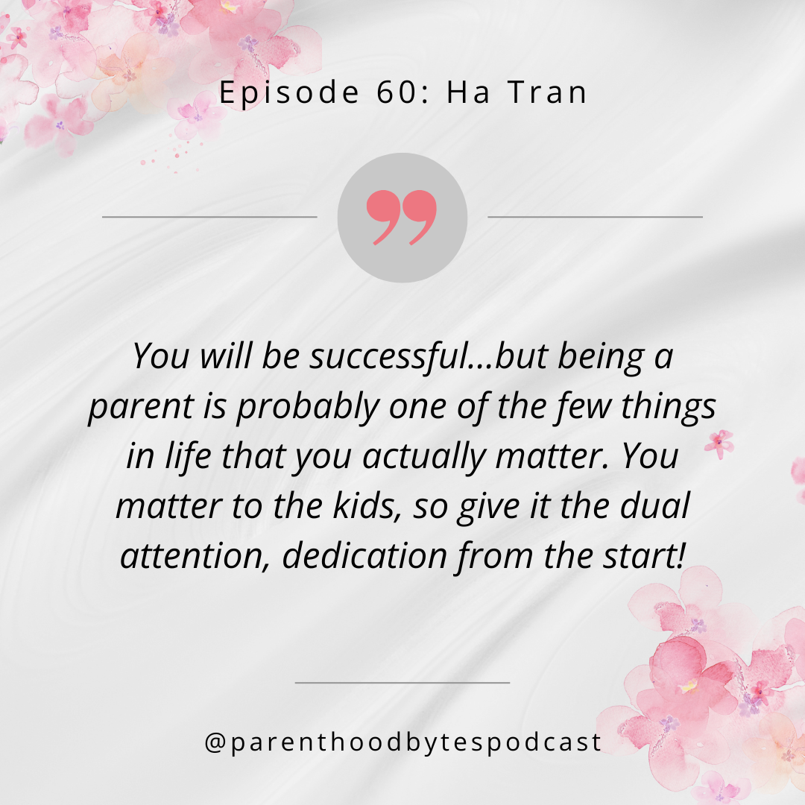

Episode 60: Ha Tran

Episode Notes
In this episode, we sit down with Ha Tran, a former tech executive turned coach, and a mother of three young children aged 6, 2, and 13 months. Ha shares her journey from the tech world to launching her coaching business, The Inner Fire, which helps individuals gain clarity, overcome challenges, and thrive in both work and life.
She opens up about how she balances a flourishing career with the demands of raising three little ones, while emphasizing the importance of carving out time for yourself and your partner. Ha’s wisdom serves as a powerful reminder: you can’t pour from an empty cup. Check out the episode for more wise tidbits from Ha!
If you are interested in learning how Coach Ha can help you, you can find her on linkedin at https://www.linkedin.com/in/hattn/ or at her website, at http://www.criya.site/coachhatran.